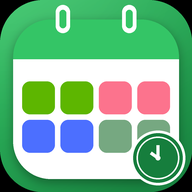

自定义班次
白班、中班、夜班、休息，或自定义任意班次：名称、颜色、图标、上下班时间都能改； 跨天班次自动显示“次日 02:00”，一眼分清上夜班和下夜班。

为倒班人做的排班日历
自定义白/中/夜/休班次与整轮轮转周期，直接选“今天是我周期第几天”，多班组一眼看懂； 按班次提前响的全屏闹钟，上班前顺手看一眼天气和穿衣建议，再去日历里记下当天要办的事。 纯本地、无账号、无广告。
不是通用日历加个颜色，而是按倒班逻辑从头做的。
白班、中班、夜班、休息，或自定义任意班次：名称、颜色、图标、上下班时间都能改； 跨天班次自动显示“次日 02:00”，一眼分清上夜班和下夜班。
按你实际上的顺序点选班次组成一轮周期（如白白中中夜夜休休）， 再直接点“今天是我周期第几天”（比如第 2 个白班）就完成整体对齐； 四班三倒、三班两倒、两班倒模板一键套用。
最多 6 个班组，每个班组直接选“今天排到周期第几天”（不用算偏移天数）； 日历默认显示“我的班组”，也可以切换查看其他班组。
每个班次一种颜色（白/中/夜/休 色条不变），同一轮 8 天的日期数字同一种颜色， 每轮首日带 ①②③ 角标 + 底部轮次图例，整个月有几个轮次一眼分明。
每个班次可配提前提醒，分钟数完全自定义、想加几条加几条（比如提前 25 分钟 + 20 分钟各一条）； 还能加独立自定义闹钟（开会等，只响一次/每天/常关）；请假可单独关掉某天或整轮班的闹钟； 没确认 5 分钟后再响，最多 3 次。
安卓桌面图标会自动显示今天上什么班：白班绿色、中班粉色、夜班蓝色、休息灰绿， 每天早上自动切换，不用打开 App 也一眼知道今天什么班。
基于 Open-Meteo 的逐小时天气：上班时段的气温、降水概率、穿衣与带伞建议； 中班、夜班跨天时会自动覆盖到次日凌晨。内置全国 3300+ 区县， 搜“北海”“合浦县”“余杭”都能精准定位；首页一键切换城市。
打开 App 发现新版本会自动弹窗，点「立即更新」就下载、校验并拉起安装， 装完自动清理安装包；还能一键忽略某个版本，不打扰你。
每天备忘、待办提醒、重要日子倒计时，全部绑定到日历日期； 数据只保存在手机本地，卸载才会清除。
不需要应用商店，下载 APK 直接安装。
点上方「下载 APK」。这是 arm64-v8a 版本，2017 年后的手机基本都是这个架构。
在通知栏或文件管理器的「下载」里点开 APK；首次会提示「未知来源应用」， 按系统提示允许本次安装即可。
打开 App 后跟着三步引导走：确认班次 → 设置轮转周期与班组 → 起个方案名。 之后日历就按你的班制排好了。
在「闹钟」标签页（或「我的 → 闹钟与权限」）里依次开启通知、精确闹钟、全屏通知， 并把 App 加入电池优化白名单，闹钟才会准时响。
不用装 APK、不用越狱、不用开发者账号，Safari 打开就能用。
iPhone / iPad 无法直接安装安卓 APK，所以提供了网页版： 打开 网页版 后，按下面 3 步「添加到主屏幕」， 桌面就会出现「倒班日历」图标，点开全屏显示，和 App 基本一样。
在 iPhone / iPad 的 Safari 里打开本站，点「在浏览器中使用」； 或直接访问 本站 /app/。（微信内置浏览器不行，需跳转 Safari）
点 Safari 底部中间的「分享」按钮（方框向上箭头）→ 下滑找「添加到主屏幕」→ 右上角「添加」。
桌面会出现「倒班日历」图标，点开即为全屏应用（没有地址栏）； 之后打开、刷新都会自动更新到最新版本。
不会。班次、方案、备忘、待办都存在手机本地的数据库里，覆盖安装会保留； 只有卸载 App 或手动“重置所有数据”才会清除。
安装包包含原生闹钟/通知、定位与天气、本地数据库等能力，以及多处机型的兼容代码。 拆分后的 arm64 包已经是体积较小的版本。
不需要。排班、闹钟、备忘、待办完全离线可用；只有「班前天气」和「检查更新」需要网络， 没网时天气会显示最近一次缓存。
先到「设置 → 闹钟与权限」完成权限检测；再按「使用教程」里的说明， 给小米 / 华为 / OPPO / vivo 等机型打开自启动和后台运行权限。国产系统的后台限制是闹钟不响最常见的原因。
可以直接在 匿名反馈页 提交，或在 App 里 「我的 → 问题反馈」填写；反馈会直达站点后台的 Netlify Forms，不需要注册账号。
没有账号系统，也没有广告 SDK。
匿名反馈，不用登录；如果留了联系方式，维护者可能会回复你。